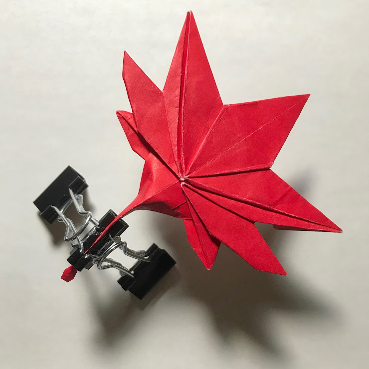
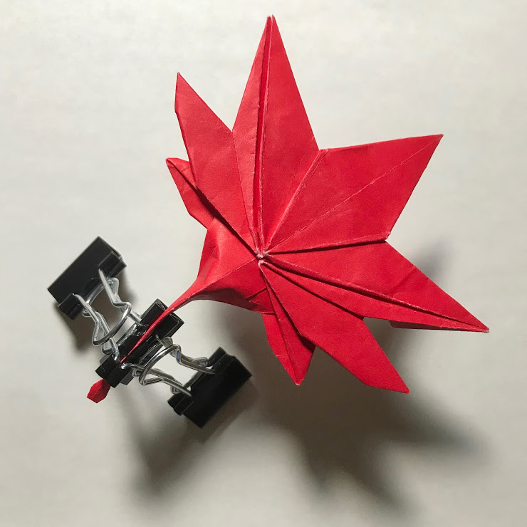

Hi, I am Ruo Ning (Nancy) Qiu, a forth-year undergraduate student at the University of Toronto. I am currently pursuing a specialist in Math and its Application in Teaching with double minor in Statistics and Computer Science.
Currently, I am exploring my research interests in mathematics and pedagogy, (or together as math education). I really enjoy teaching what I have learned in mathematics to people around me and discussing teaching methods with my peers to improve one’s teaching.
In my spare times, I like to fold origami and read science fantasy novels.
 
